Lab 1 — Hello Cloud
Huỳnh Trung Tín · MSSV 2324802010372
Thực hành ngày 05/11/2026. Các mốc giờ trong báo cáo dùng múi giờ Việt Nam.
So sánh môi trường
Bấm tạo Codespace lúc 13:49:59. Lần dựng đầu gặp lỗi và vào chế độ khôi phục. Bắt đầu dựng lại lúc 13:55:47 với cấu hình Node.js 22 tối thiểu. API phản hồi thành công lúc 13:58:21, khoảng 8 phút 22 giây kể từ lúc bấm tạo, gồm thời gian xử lý lỗi.
| Tiêu chí | Máy cá nhân | Codespace |
|---|---|---|
Từ lúc bắt đầu đến khi chạy được node -v | Node.js v24.21.0 đã cài sẵn. Thời gian cài ban đầu chưa được ghi. | Lượt tạo mới ngày 05/11/2026. Bấm tạo lúc 14:38:56. Quan sát terminal sẵn sàng lúc 14:40:51 (khoảng 1 phút 55 giây, gồm bước xác nhận tin cậy thư mục). Xác nhận node -v trả v22.23.4 lúc 14:41:30 (khoảng 2 phút 34 giây từ lúc bấm tạo, gồm thời gian thao tác). |
CPU logic và RAM theo GET / | 16 CPU logic, 7,7 GB RAM | 2 CPU logic, 7,8 GB RAM |
| Hệ điều hành | Windows_NT 10.0.26300 | Linux 6.8.0-1064-azure |
| Truy cập từ thiết bị khác | Có thể dùng IP nội bộ và cổng 3000 trong cùng mạng nếu tường lửa cho phép. Chưa thử trên điện thoại. | Mở URL HTTPS trên điện thoại qua 5G lúc 14:05:46 khi cổng 3000 ở chế độ Public. Sau đó đã chuyển về Private. |
| Chi phí và đơn vị đo | Chi phí phần cứng tính theo giá mua. Điện năng đo bằng kWh. Chưa đo chi phí riêng cho bài thực hành. | GitHub Billing Usage lọc Codespaces trong tháng 11/2026 báo “No usage found”. Chưa có số liệu core-giờ tại thời điểm kiểm tra. |
Năm đặc tính điện toán đám mây của NIST
- Tự phục vụ theo yêu cầu. Tự bấm tạo Codespace trên nhánh
mainvà ghi thời gian cấp phát. - Truy cập mạng rộng. Mở URL HTTPS của API trên điện thoại khi cổng 3000 ở chế độ Public.
- Gộp tài nguyên. Tạo Codespace trên hạ tầng do GitHub cấp phát và ghi
hosttrước và sau Stop/Start để đối chiếu. - Co giãn nhanh. Tạo môi trường khi cần và dừng phiên sau khi làm xong để kết thúc sử dụng tài nguyên tính toán.
- Dịch vụ đo lường được. Kiểm tra Billing Usage để theo dõi mức sử dụng Codespaces theo core-giờ. Trang chưa hiển thị số liệu khi kiểm tra.
Câu hỏi phản biện
- Giá trị
hostsau Stop/Start. Lần đầu lúc 13:58:21 ngày 05/11/2026 ghi nhậncodespaces-c2a564. Cần đo lần hai sau khi Stop rồi Start lại vào ngày hôm sau. Đây là tên máy do môi trường chạy báo về. Để kết luận về việc đổi máy vật lý, cần thêm dữ liệu về hạ tầng bên dưới. - Mô hình dịch vụ. Có thể lập luận Codespaces gần với PaaS cho phát triển phần mềm. GitHub quản lý hạ tầng và hệ điều hành máy chủ. Người dùng chọn ảnh môi trường, phiên bản runtime và quản lý phụ thuộc cùng mã nguồn.
- So với phòng lab truyền thống. Một cấu hình dùng chung giảm việc cài lặp lại trên từng máy và giảm chênh lệch phiên bản môi trường. Rủi ro mới là việc thực hành phụ thuộc vào kết nối mạng.
Lab 2 — Ảo hóa, container và mô phỏng trung tâm dữ liệu
Thực hành ngày 12/11/2026. Đóng gói API Node.js bằng Docker, phân phối image qua GHCR và thử nghiệm số VM, số tác vụ, bộ lập lịch bằng CloudSim Plus.
Image công khai trên GHCR và mã nguồn
- Package notes-api trên GHCR — image
ghcr.io/tinhuynh7/notes-api:1.0. - Dockerfile trong kho mã nguồn.
- Kho mã nguồn notes-api-2324802010372.
Đã đăng xuất GHCR, xóa image cục bộ rồi kéo lại image công khai thành công. Container chạy từ image kéo về trả JSON với thông điệp “Xin chào từ đám mây!”.
docker pull ghcr.io/tinhuynh7/notes-api:1.0
docker run -d --name notes1 -p 3000:3000 ghcr.io/tinhuynh7/notes-api:1.0
curl -s localhost:3000Dockerfile
FROM node:22-alpine
WORKDIR /app
COPY package*.json ./
RUN npm ci --omit=dev
COPY src ./src
ENV PORT=3000
EXPOSE 3000
USER node
CMD ["node", "src/server.js"].dockerignore loại node_modules, .env, .git và docs khỏi ngữ cảnh build. Image chỉ cài phụ thuộc chạy ứng dụng và chạy bằng tài khoản node.
Bảng 1 — So sánh Codespace và container
| Tiêu chí | Codespace | Container Docker |
|---|---|---|
| Thời gian khởi động | Khoảng 1 phút 55 giây đến khi terminal sẵn sàng, theo lượt đo Lab 1. | 0,450 giây từ dòng real của time docker run --rm notes-api:1.0 node -e "1". |
| Kích thước hoặc hạn mức lưu trữ | 15 GB-tháng là hạn mức theo đề, không phải kích thước image hay dung lượng thực tế đã dùng. | DISK USAGE: 251 MB; CONTENT SIZE: 63,3 MB theo docker images notes-api. |
| Nhân hệ điều hành | 6.8.0-1070-azure theo uname -r. | notes1 và notes2 cùng trả 6.8.0-1070-azure; dùng chung nhân với máy chủ Docker. |
| Mức cô lập | Môi trường phát triển chạy trong container trên hạ tầng VM của Codespaces; VM là lớp cô lập bên dưới. | Cô lập tiến trình và giới hạn tài nguyên bằng namespaces/cgroups; không có nhân riêng. |
Hai phép đo thời gian có phạm vi khác nhau: Codespace gồm cấp phát môi trường và thao tác xác nhận; lệnh Docker chỉ tạo container từ image đã có, chạy Node rồi thoát. Vì vậy, số liệu minh họa chi phí khởi tạo của hai quy trình, không phải phép đo tốc độ tương đương.
notes2 được giới hạn --cpus=0.5 --memory=128m. docker stats --no-stream ghi nhận khoảng 13,09 MiB / 128 MiB; docker inspect xác nhận NanoCpus=500000000 và Memory=134217728 byte. Hai API đều trả JSON; trường memoryGB vẫn khoảng 7,8 GB.
Bảng 2 — Thí nghiệm CloudSim Plus
Cấu hình gốc: 1 host có 8 lõi, 2 VM có 4 lõi/VM, 4 cloudlet có 2 lõi/cloudlet, chiều dài 10.000 MI và mức sử dụng CPU 50%. Giá trị ghi dưới đây là FinishTime lớn nhất trong bảng cloudlet, không phải thời điểm tắt mô phỏng.
| Lần | Thay đổi | FinishTime cuối | Kết quả và ghi chú |
|---|---|---|---|
| 0 | Giữ nguyên cấu hình gốc. | 20,1 giây | 4/4 cloudlet SUCCESS. |
| 1 | Nhân đôi VMS: 2 → 4. | 45,6 giây | 4/4 cloudlet SUCCESS. Host 8 lõi không đủ cấp cho 4 VM × 4 lõi. VM 2 và 3 không đặt được; các lần thử lại làm cloudlet bắt đầu ở 25,6 giây. |
| 2 | Nhân đôi CLOUDLETS: 4 → 8; bản chạy sau khắc phục đặt nhu cầu RAM/BW mỗi cloudlet ở 25%. | 40,1 giây | 8/8 cloudlet SUCCESS sau khắc phục; CPU vẫn 50%, VMS vẫn 2. Mô phỏng tắt ở 40,22 giây. |
| 3 | Giữ 2 VM, 4 cloudlet; dùng CloudletSchedulerSpaceShared. | 20,1 giây | 4/4 cloudlet SUCCESS. |
Ghi chú về lần 2: với mô hình gốc, mỗi cloudlet yêu cầu 50% RAM và băng thông của VM. Bốn cloudlet trên một VM có tổng nhu cầu 200%. Lượt chạy ban đầu chỉ có 4/8 cloudlet hoàn thành lúc 40,1 giây và cảnh báo VM bị hủy khi còn tác vụ. Sau khi đặt riêng mức sử dụng RAM và băng thông ở 25%, giữ CPU ở 50%, cả 8 cloudlet hoàn thành.
cloudlet.setUtilizationModelRam(new UtilizationModelDynamic(0.25));
cloudlet.setUtilizationModelBw(new UtilizationModelDynamic(0.25));Lần 2 sau khắc phục có thêm thay đổi mô hình tài nguyên so với bản gốc, nên bảng trên chưa phải phép so sánh hoàn toàn một yếu tố. Kiểm chứng bổ sung trên máy cá nhân với RAM/BW 25% dùng chung cho cả bốn lần cho thời gian 20,1; 45,6; 40,1; 20,1 giây. Các lần 0, 1 và 3 chưa được chạy lại trên Codespace với cấu hình chung này.
Câu hỏi phản biện
1. Vì sao notes2 vẫn báo RAM máy chủ dù giới hạn 128 MiB?
API tính memoryGB bằng os.totalmem(). Trong môi trường thực nghiệm, giá trị này phản ánh tổng RAM hệ thống khoảng 7,8 GB, còn giới hạn 128 MiB được Docker thực thi bằng cgroup. Giá trị hiển thị của API không phải ngân sách bộ nhớ mà container được phép dùng.
Ứng dụng Java hoặc Node.js cần dùng runtime nhận biết giới hạn container và kiểm tra ngân sách bộ nhớ thực tế; không tính heap hoặc cache chỉ dựa trên RAM máy chủ. Nếu cấu hình heap bằng -Xmx của Java hoặc --max-old-space-size của Node.js, phải chừa phần bộ nhớ cho luồng, thư viện native, buffer và các vùng ngoài heap. Vượt giới hạn có thể khiến tiến trình bị OOM-kill. Với Node.js có thể kiểm tra process.constrainedMemory() và theo dõi process.memoryUsage().
2. Time-shared và space-shared khác nhau ra sao? Gói giá rẻ nên dùng chính sách nào?
Time-shared chia sẻ năng lực CPU giữa các cloudlet đang chạy. Space-shared chỉ cho cloudlet bắt đầu khi có đủ lõi, các cloudlet khác chờ đến khi lõi được giải phóng. Trong lần 3, mỗi VM có 4 lõi và nhận 2 cloudlet × 2 lõi nên đủ chạy đồng thời. Vì vậy, cả TimeShared ở lần 0 và SpaceShared ở lần 3 đều có FinishTime 20,1 giây.
Với gói giá rẻ, nhà cung cấp có thể chọn CPU chia sẻ theo thời gian để phục vụ nhiều khách hàng trên cùng hạ tầng, tăng mức tận dụng và giảm chi phí trên mỗi khách hàng. Đổi lại, hiệu năng có thể dao động khi có tranh chấp CPU; cần hạn mức và cơ chế chia sẻ công bằng. Đây là lập luận về chính sách cung cấp dịch vụ. Bộ lập lịch cloudlet trong thí nghiệm chỉ minh họa nguyên lý, không trực tiếp đo chính sách chia sẻ CPU giữa các khách hàng.
3. Mô phỏng giúp ích gì trước khi thuê hạ tầng thật? Sai lệch có thể đến từ đâu?
Mô phỏng giúp thử số host, số VM, khối lượng tác vụ và bộ lập lịch trước khi trả tiền thuê hạ tầng. Có thể phát hiện cấu hình thiếu tài nguyên, so sánh phương án và ước lượng thời gian xử lý để chọn phương án thử nghiệm thực tế.
Kết quả phụ thuộc vào mô hình và tham số đầu vào. CPU thực tế, cache, tốc độ mạng, I/O ổ đĩa, thời gian khởi động, thu gom rác, tải từ người dùng khác và cơ chế giới hạn tài nguyên có thể khác giả định. Lỗi hoặc cấu hình của bộ mô phỏng cũng có thể ảnh hưởng kết quả, như lượt chạy 8 cloudlet ban đầu. Cần kiểm chứng bằng tải đại diện trên hạ tầng thật trước khi quyết định triển khai.
Tài liệu tham khảo
Lab 3 — Lưu trữ phân tán NoSQL và lưu trữ đối tượng
Huỳnh Trung Tín · MSSV 2324802010372 · Thực hành ngày 19/11/2026.
Báo cáo tổng hợp mã nguồn, số liệu và minh chứng thực hành MongoDB Atlas cùng Supabase Storage. Chỉ mục tags giảm số tài liệu cần kiểm tra từ 2.000 xuống 571, tương đương 3,50 lần; CRUD và tải tệp đã được kiểm tra theo các tình huống của đề.
1 Hệ thống và sản phẩm thực hành
API Node.js và Express 5 tiếp tục repo bài 2, giữ GET / và thêm /notes. MongoDB Atlas sử dụng Cluster0, gói Free, AWS Singapore, replica set 3 nút. User notes_app có quyền readWrite trên database notes. Network Access mở 0.0.0.0/0 theo yêu cầu lab.
Supabase project cloud-lab đặt tại Singapore; bucket attachments ở chế độ Public. API giới hạn tệp 2 MB và lưu attachmentUrl trong MongoDB. Các biến kết nối được lưu trong .env, tệp này được Git bỏ qua.
Kho mã nguồn notes-api-2324802010372
Báo cáo HTML Lab03 trên GitHub Pages
Commit Bai 3 trên GitHub 9f49d5a
2 Kết quả đo hiệu quả chỉ mục
| Cách truy vấn | docsExamined | returned | ms |
|---|---|---|---|
| Quét toàn bộ | 2.000 | 571 | 2 |
| Dùng chỉ mục | 571 | 571 | 1 |
Chạy node scripts/seed.js để tạo 2.000 ghi chú, sau đó node scripts/explain.js. Hai truy vấn có cùng điều kiện tags = docker; một truy vấn ép quét toàn bộ bằng $natural, truy vấn còn lại ép dùng chỉ mục tags.
Tỉ số giảm quét = 2.000 / 571 ≈ 3,50 lần. Số tài liệu kiểm tra giảm 1.429, tương đương 71,45%. Hai cách đều trả 571 kết quả. Thời gian 2 ms và 1 ms thuộc lần đo minh chứng, không bảo đảm luôn nhanh gấp hai lần.
3 Kết quả CRUD và lưu trữ tệp
Ghi chú có tệp đính kèm được giữ lại để kiểm tra; thao tác xóa được thực hiện trên ghi chú riêng. Ảnh trình duyệt xác nhận tệp public hiển thị đúng nội dung.
Mở tệp note.txt minh chứng trên Supabase
Đối chiếu điểm kiểm tra: đủ năm thao tác tạo, danh sách, chi tiết, cập nhật, xóa; mã 201/204/404/400 đúng tình huống; mở được tệp qua attachmentUrl; có bảng số liệu hai cách truy vấn; git status không liệt kê .env.
API được kiểm tra tại localhost. Địa chỉ localhost không phải URL API công khai dành cho người chấm. Những kết quả trên được ghi nhận tại thời điểm thực nghiệm.
4 So sánh nhân bản Atlas và HDFS
Ảnh Atlas xác nhận cụm ở Singapore và Replica Set 3 nodes. Mô hình bài lab gồm một primary và hai secondary; ảnh tổng quan không hiển thị vai trò riêng của từng nút.
Giống nhau: duy trì nhiều bản sao để chịu lỗi máy và tăng tính sẵn sàng. Khác nhau: primary lưu dữ liệu ứng dụng, còn NameNode quản lý metadata và vị trí khối. Primary không tương đương NameNode. Nhân bản không thay thế sao lưu vì thao tác xóa nhầm có thể được phản ánh trên các bản sao.
5 Câu hỏi phản biện
1 Khi dữ liệu tăng lên 2 triệu tài liệu
Giữ nguyên phân bố tag, số tài liệu tăng 1.000 lần: quét toàn bộ cần kiểm tra khoảng 2.000.000 tài liệu; dùng chỉ mục khoảng 571.000 tài liệu, vẫn giảm khoảng 3,50 lần. Đây là ước lượng theo dữ liệu đã đo, không phải phép đo thật ở quy mô 2 triệu.
Thời gian còn phụ thuộc cache, I/O, tải hệ thống, truy cập chỉ mục và truyền kết quả. Giới hạn 100 thao tác/giây trong giả thiết đề không phải 100 tài liệu quét/giây; không thể lấy 2 triệu chia 100 để tính thời gian truy vấn. Khi tải tăng, quét nhiều dữ liệu làm tăng công việc mỗi truy vấn và có thể tăng độ trễ.
2 Vì sao lưu tệp ở Supabase và URL trong MongoDB
Object Storage phù hợp lưu và phân phối tệp qua HTTP. MongoDB giữ metadata và URL nên tài liệu gọn, không phải truyền nội dung tệp khi lấy danh sách ghi chú; đồng thời giảm dữ liệu tệp phải lưu và nhân bản trong database.
Cần quản lý tính nhất quán giữa hai dịch vụ: upload thành công nhưng lưu ghi chú thất bại có thể để lại tệp không được tham chiếu. Mã lab chưa tự xóa tệp cũ khi thay attachment hoặc xóa ghi chú. Bucket public chỉ phù hợp tệp không nhạy cảm.
3 Mục tiêu của ba bản sao và đơn vị nhân bản
Mục tiêu chung là giữ dữ liệu ở nhiều nơi để chịu lỗi máy. Replica set ba thành viên bỏ phiếu có thể duy trì đa số khi một thành viên hỏng, nếu điều kiện kết nối và bầu chọn phù hợp; primary mới có thể được bầu từ secondary.
Atlas nhân bản dữ liệu giữa các thành viên replica set. HDFS mặc định lưu ba bản sao mỗi khối tệp trên DataNode; NameNode không phải một trong ba bản sao khối. Khả năng phục vụ HDFS còn phụ thuộc NameNode và cấu hình HA. Ba DataNode trong sơ đồ chỉ minh họa một khối có ba bản sao.
Sơ đồ so sánh Atlas và HDFS
Ảnh minh chứng thực nghiệm
Minh chứng bổ sung MongoDB Atlas
Minh chứng bổ sung Supabase
Bảng kiểm tra CRUD và upload
| Thao tác hoặc tình huống | Kết quả | Minh chứng |
|---|---|---|
| POST /notes | 201, trả ghi chú có _id | Hình 5 |
| GET /notes?tag=nosql | 200, danh sách đã lọc | Hình 6 |
| GET /notes/:id | 200, đúng ghi chú | Hình 7 |
| PUT /notes/:id | 200, tiêu đề đã cập nhật | Hình 8 |
| POST /notes/:id/attachment | Có attachmentUrl | Hình 9 |
| Mở attachmentUrl | Đúng nội dung tệp | Hình 10 |
| DELETE /notes/:id | 204 | Hình 11 |
| GET lại ghi chú đã xóa | 404 | Hình 12 |
| POST /notes với JSON {} | 400, thiếu title | Hình 13 |
| git check-ignore và git status | Bỏ qua .env | Hình 4 |
Bảng so sánh Atlas và HDFS
| Nội dung | MongoDB Atlas | HDFS |
|---|---|---|
| Đơn vị nhân bản | Dữ liệu giữa các thành viên replica set | Từng khối tệp giữa các DataNode |
| Vai trò chính | Primary nhận ghi; secondary sao chép thay đổi | NameNode quản lý metadata; DataNode giữ khối |
| Ý nghĩa số 3 | Ba thành viên của replica set | Ba bản sao mỗi khối; có thể nhiều hơn ba DataNode |
| Luồng ghi minh họa | Ứng dụng ghi primary, thay đổi được nhân bản | Client hỏi NameNode rồi ghi qua pipeline DataNode |
Ảnh minh chứng Lab03
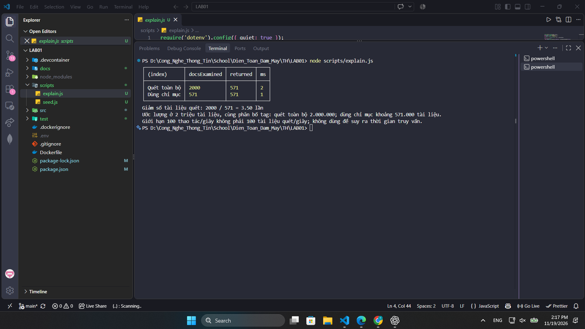
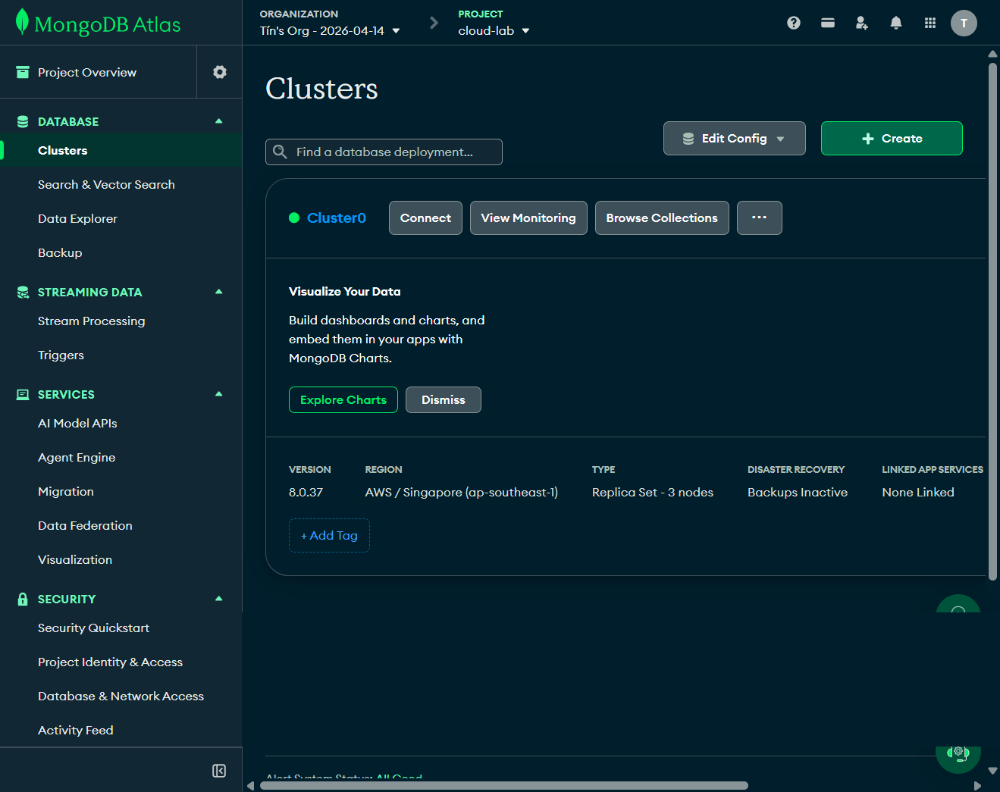
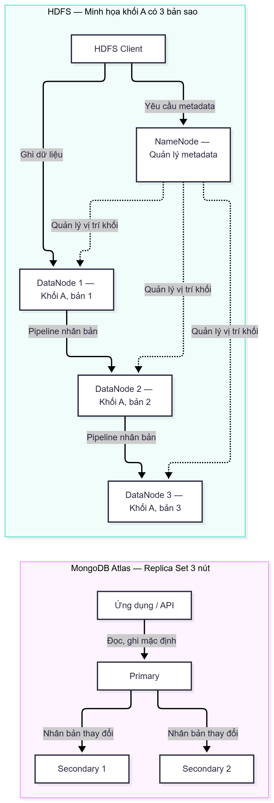
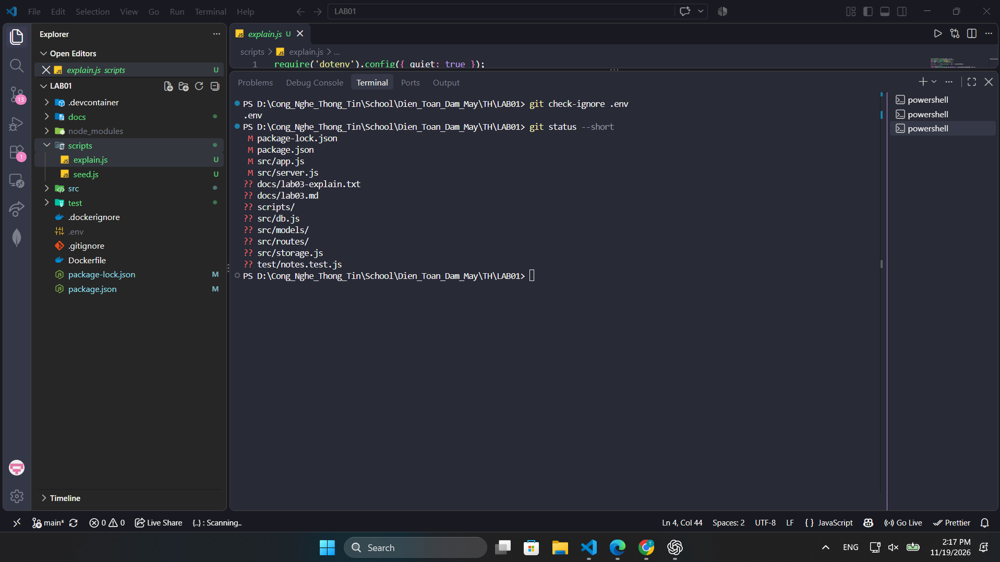
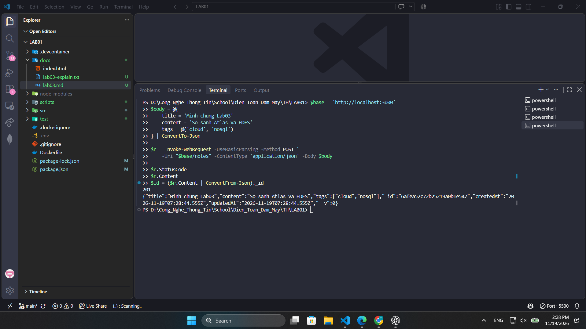
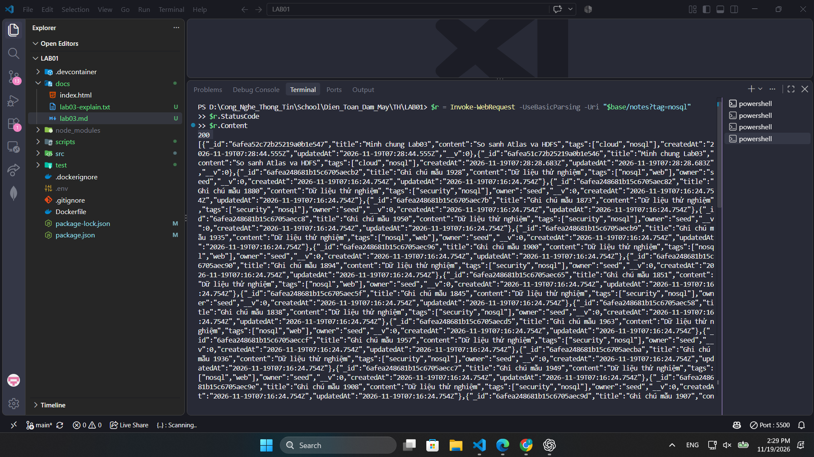
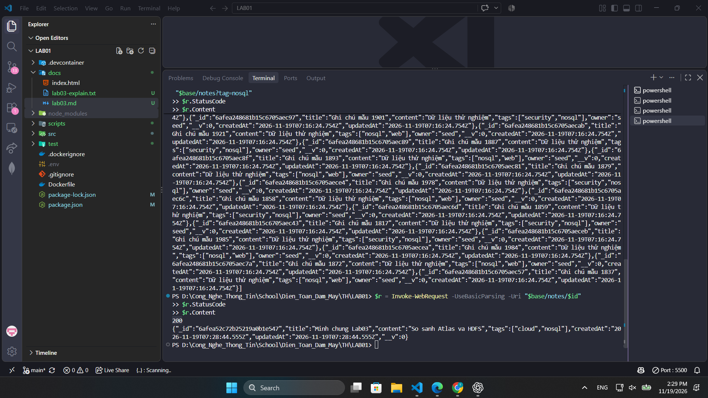
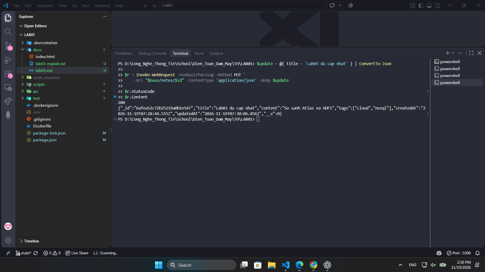
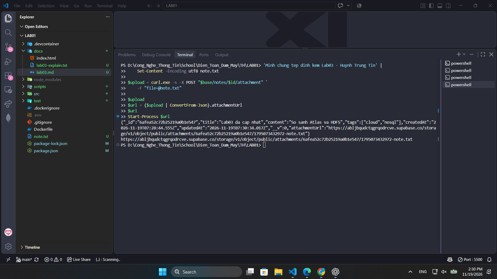
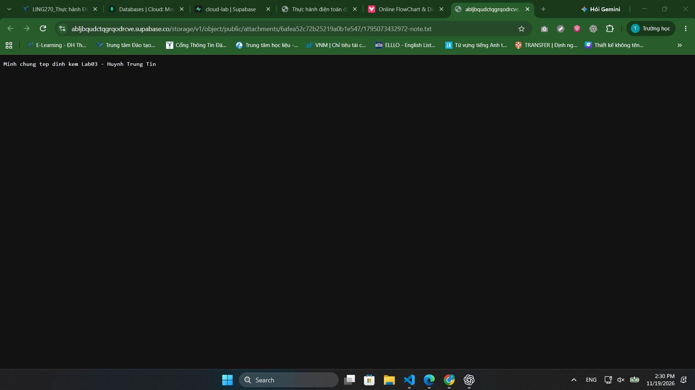
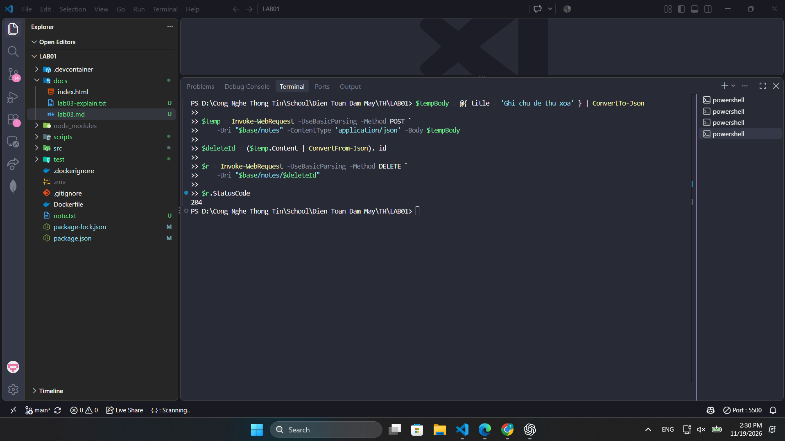
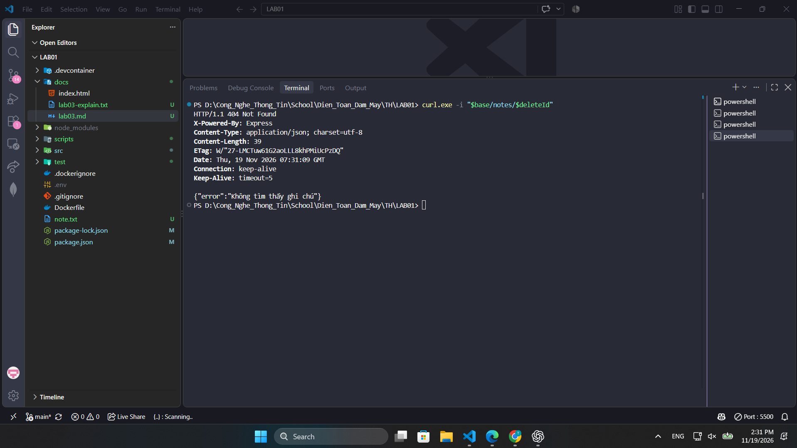
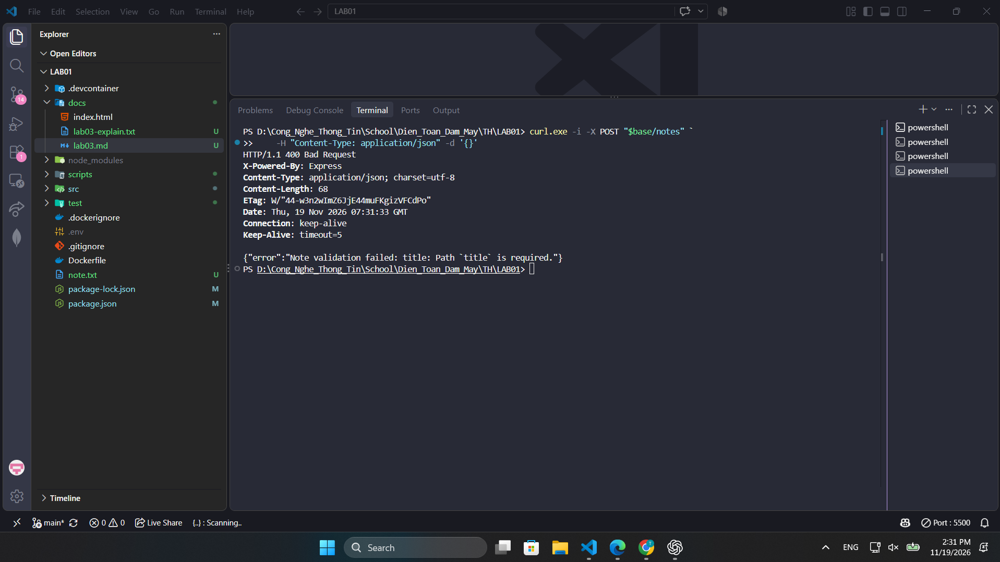
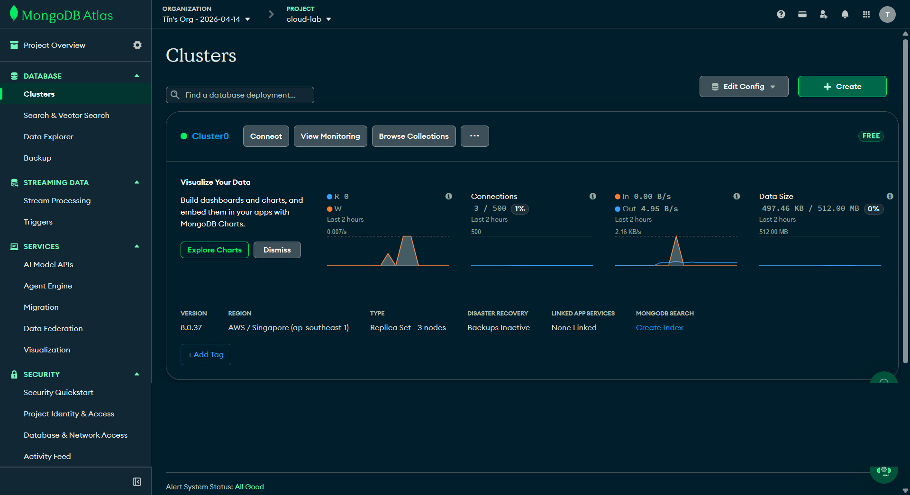
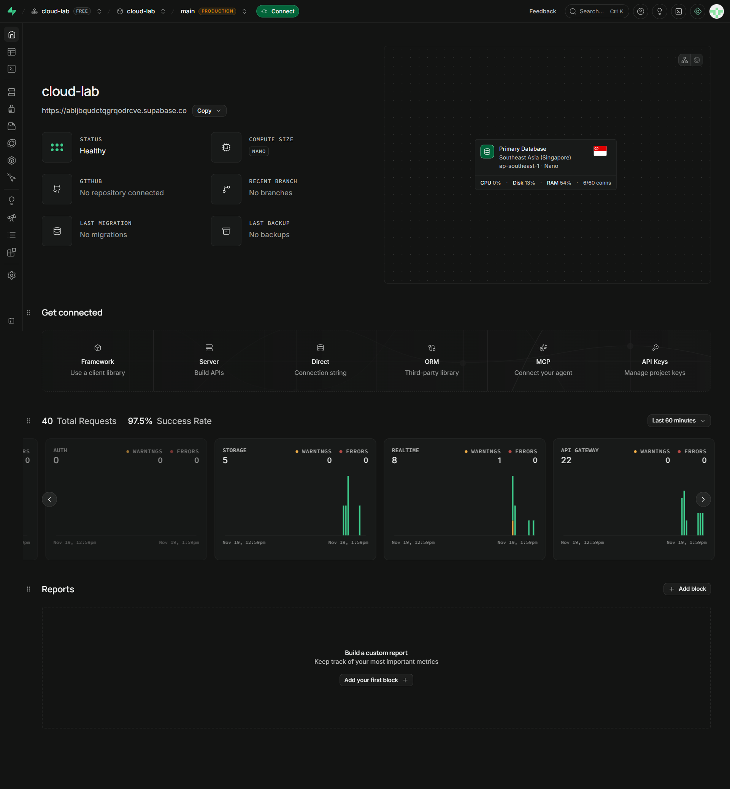